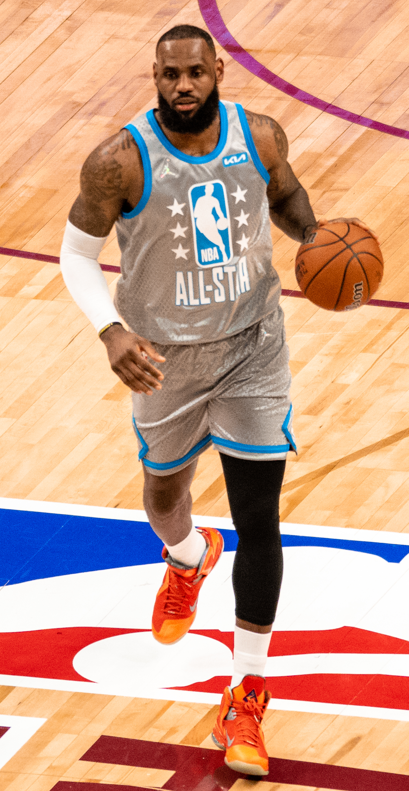

O NBA All-Star ocupa um espaço único no calendário do esporte. Realizado durante a temporada regular, o evento interrompe momentaneamente a disputa por vitórias, posições de conferência e vagas nos playoffs para colocar os principais nomes da liga em um ambiente voltado ao espetáculo.
A atração principal é o All-Star Game, criado em 1951. Ao redor dele, porém, nasceu uma programação que se tornou tão importante quanto a própria partida. Concurso de enterradas, disputa de três pontos, desafios de habilidade e eventos voltados aos jovens jogadores ajudaram a transformar o antigo encontro entre estrelas em um fim de semana completo.
Ao mesmo tempo, poucas tradições da NBA passaram por tantas mudanças de formato. O clássico Leste contra Oeste dominou grande parte da história, mas a liga também experimentou draft de jogadores, pontuação-alvo, minitorneios e confrontos envolvendo estrelas norte-americanas e internacionais. Essa capacidade de mudar ajuda a explicar por que entender o All-Star significa também conhecer parte da evolução da própria NBA.
O início da tradição
A primeira edição do NBA All-Star Game aconteceu em 2 de março de 1951, no Boston Garden. A ideia nasceu em um período no qual a liga ainda procurava ampliar sua popularidade e fortalecer o interesse do público no basquete profissional.
O conceito foi discutido por nomes importantes dos primeiros anos da NBA, entre eles o comissário Maurice Podoloff, o responsável pela publicidade da liga Haskell Cohen e Walter Brown, presidente do Boston Celtics. Inspirado em eventos semelhantes de outras ligas esportivas norte-americanas, o projeto reuniria em uma mesma partida os principais jogadores daquele momento.
A estreia terminou com vitória da Conferência Leste sobre a Oeste por 111 a 94. Ed Macauley, do Boston Celtics, marcou 20 pontos e posteriormente ficou reconhecido como o MVP daquela primeira edição.
O sucesso transformou aquela experiência em tradição. A partir dali, ser escolhido para o All-Star passou a representar uma distinção importante na carreira de um jogador.
Quando um atleta é chamado de All-Star, significa que ele foi selecionado para integrar o grupo de jogadores escolhidos para o evento daquela temporada.
A quantidade de convocações acumuladas durante uma carreira se tornou, inclusive, uma das medidas utilizadas para contextualizar a longevidade e a presença de uma estrela entre a elite da liga.
LeBron James é o maior exemplo. Em 2026, ele chegou à 22ª seleção consecutiva para o All-Star, recorde da NBA. LeBron também havia alcançado 449 pontos em jogos do evento, a maior marca acumulada da história.
A dimensão dessas marcas acompanha o tamanho de sua trajetória, abordada também na matéria sobre a história, os títulos e os recordes de LeBron James.
Como os jogadores são escolhidos
O sistema de seleção mudou ao longo das décadas.
Nas primeiras edições, jornalistas e profissionais de mídia tiveram participação decisiva na composição dos times. O modelo foi sendo reformulado conforme a NBA cresceu, e os torcedores ganharam papel cada vez maior.
Em edições recentes, a liga manteve uma combinação de votação popular, jogadores da própria NBA e imprensa para definir os titulares. Em 2026, por exemplo, os fãs representaram 50% do resultado da votação dos titulares, enquanto jogadores da NBA ficaram responsáveis por 25% e um painel de mídia pelos outros 25%.
Os reservas foram escolhidos pelos técnicos da liga. A edição de 2026 manteve a seleção de 24 All-Stars, 12 provenientes de cada conferência, embora a montagem das equipes do jogo tenha seguido um formato diferente.
Partida que marcou a maior parte da história
Durante décadas, a imagem clássica do All-Star Game foi simples: estrelas da Conferência Leste enfrentando estrelas da Conferência Oeste.
Essa divisão produziu alguns dos encontros mais famosos da história da liga e colocou simultaneamente em quadra jogadores que normalmente eram rivais durante a temporada.
O modelo tradicional, entretanto, começou a ser questionado à medida que a própria natureza do jogo de exibição mudou.
A era do draft dos capitães
Em 2018, a NBA realizou uma transformação importante.
O confronto deixou de colocar obrigatoriamente Leste contra Oeste. Os jogadores ainda eram selecionados a partir das conferências, mas dois capitães passaram a montar as equipes por meio de um draft, escolhendo atletas independentemente do lado do país em que jogavam.
LeBron James e Stephen Curry foram os primeiros capitães desse formato.
A mudança permitiu combinações antes difíceis de acontecer no All-Star. Companheiros de conferência poderiam atuar em equipes opostas, enquanto grandes rivais poderiam aparecer no mesmo time.
Novas mudanças mostraram que o formato não é permanente
Em 2020, a NBA introduziu uma pontuação-alvo para decidir a partida, eliminando o relógio no período decisivo. A proposta buscava aumentar a competitividade principalmente nos minutos finais.
Em 2024, a liga recuperou o confronto tradicional entre Conferência Leste e Conferência Oeste e voltou aos quatro quartos de 12 minutos.
A experiência durou apenas aquela edição.
Em 2025, surgiu um minitorneio com quatro equipes. Foram disputadas duas semifinais e uma final, e cada partida terminava quando uma equipe alcançava ou ultrapassava 40 pontos.
Em 2026, outra reformulação colocou duas equipes de jogadores norte-americanos e uma seleção de atletas internacionais em um sistema de todos contra todos. O torneio contou com quatro partidas de 12 minutos, incluindo a decisão entre os dois melhores times da fase inicial.
A sequência mostra uma característica fundamental do NBA All-Star moderno: sua estrutura pode ser alterada pela liga. O evento é permanente; o regulamento não necessariamente.
All-Star Weekend além do jogo principal
O crescimento do NBA All-Star criou um verdadeiro festival de basquete.
Atualmente, o jogo das estrelas representa apenas uma parte da programação. O fim de semana reúne atrações competitivas, apresentações e eventos envolvendo diferentes perfis de atletas.
Entre os mais conhecidos estão o Slam Dunk Contest, o concurso de três pontos e o Rising Stars. Dependendo da edição, a NBA também inclui desafios de habilidades e outras atrações especiais.
Por isso, quando alguém fala em “All-Star Weekend”, está se referindo ao conjunto da programação. O “All-Star Game” é especificamente a principal disputa entre as estrelas selecionadas.
Slam Dunk Contest virou parte da cultura da NBA
Poucos eventos esportivos produziram tantas imagens icônicas quanto o concurso de enterradas.
A NBA incorporou definitivamente a competição em 1984, quando Larry Nance venceu a disputa. O conceito já havia aparecido anteriormente na ABA, cuja competição de 1976 teve Julius Erving como vencedor.
Com o passar das décadas, o Dunk Contest criou momentos que ultrapassaram o próprio All-Star.
Michael Jordan e Dominique Wilkins transformaram suas disputas em símbolos dos anos 1980. Spud Webb impressionou pela explosão apesar de sua baixa estatura para os padrões da liga. Vince Carter produziu uma das apresentações mais lembradas da história em 2000. Nate Robinson, Zach LaVine e outros campeões mantiveram a competição entre as atrações mais conhecidas do evento.
Kobe Bryant também está na lista de campeões. Ele venceu o concurso em 1997, antes de construir a carreira que o colocaria entre os maiores jogadores da história da NBA.
Concurso de três pontos cresceu junto com a evolução do jogo
O Three-Point Contest estreou em 1986, com Larry Bird conquistando o primeiro título.
Bird venceu também as duas edições seguintes e ajudou a dar importância a uma competição criada quando os arremessos de longa distância ainda ocupavam um espaço muito menor no basquete do que atualmente.
A evolução do concurso acompanha uma transformação tática da própria NBA.
Com o aumento da importância das bolas de três pontos, o evento passou a reunir algumas das maiores estrelas ofensivas da liga. Stephen Curry, Klay Thompson, Damian Lillard e outros grandes arremessadores conquistaram o torneio em diferentes momentos.
MVP leva o nome de Kobe Bryant
A principal premiação individual da partida é o troféu de MVP do NBA All-Star Game.
Desde 2020, o prêmio leva oficialmente o nome de Kobe Bryant, que participou de 18 All-Star Games e conquistou quatro prêmios de MVP do evento.
Em 2022, a NBA apresentou uma nova versão física do Kobe Bryant Trophy, construída com diversos elementos relacionados à carreira do ex-jogador do Los Angeles Lakers.
Kobe divide com Bob Pettit o recorde de quatro prêmios de MVP do All-Star Game.
Jogadores com mais seleções para o NBA All-Star
Ser escolhido é uma das formas mais tradicionais de medir a permanência de um jogador entre as grandes estrelas da NBA. Uma convocação isolada pode marcar o auge de uma temporada, mas aparecer repetidamente no evento exige longevidade, desempenho e relevância durante muitos anos. Por isso, a lista de jogadores com mais seleções para o All-Star reúne alguns dos maiores nomes da história da liga.
Os 10 jogadores com mais seleções para o NBA All-Star:
- LeBron James — 22 seleções
- Kareem Abdul-Jabbar — 19 seleções
- Kobe Bryant — 18 seleções
- Kevin Durant — 16 seleções
- Tim Duncan — 15 seleções
- Kevin Garnett — 15 seleções
- Shaquille O'Neal — 15 seleções
- Michael Jordan — 14 seleções
- Karl Malone — 14 seleções
- Dirk Nowitzki — 14 seleções
- Jerry West — 14 seleções
O ranking mostra como o All-Star também funciona como um registro da longevidade das maiores estrelas da NBA.
Por que o NBA All-Star é tão importante
O fim de semana não entrega o título da temporada, não interfere diretamente nos playoffs e não possui a pressão competitiva das NBA Finals. Sua importância está em outra dimensão.
O evento funciona como uma celebração da liga e de suas estrelas.
Para jogadores jovens, uma primeira seleção pode representar a confirmação de que chegaram ao grupo de elite. Para veteranos, o número de aparições ajuda a documentar anos de excelência. Para o público, é uma oportunidade rara de ver grandes nomes dividindo a quadra sem as limitações normais das rivalidades e dos elencos.
O All-Star também funciona como um retrato de cada época. O evento dos anos 1980 ajuda a contar a ascensão de Magic Johnson, Larry Bird e Michael Jordan. Os anos seguintes registraram a presença de Shaquille O'Neal e Kobe Bryant. Depois vieram LeBron James, Kevin Durant e Stephen Curry. Novas gerações assumem gradualmente esse espaço.
Entender esse encontro entre estrelas é também compreender uma parte da história da NBA, suas conferências, playoffs e os grandes campeões.
O próximo NBA All-Star será em Phoenix
A próxima edição já tem data e sede definidas. O NBA All-Star 2027 será realizado entre 19 e 21 de fevereiro de 2027, em Phoenix, no Arizona. O 76º All-Star Game está marcado para domingo, 21 de fevereiro, no Mortgage Matchup Center, casa do Phoenix Suns. O evento estará inserido na pausa do All-Star da temporada 2026/27, prevista no calendário da liga entre 19 e 24 de fevereiro.
O fim de semana será novamente um dos pontos altos da temporada, reunindo as estrelas da liga e as tradicionais atrações ligadas ao All-Star. Para acompanhar as principais datas da competição, período da temporada regular e caminho até a pós-temporada, confira também o calendário completo da NBA 2026/27, com início da temporada, playoffs e finais.
Um evento que muda sem abandonar sua essência
Desde aquela primeira partida de 1951 no Boston Garden, o NBA All-Star mudou quase tudo ao seu redor.
Mudaram as arenas, a televisão, a votação, os uniformes, as atrações e até o formato da partida principal. O Leste contra Oeste deixou de ser uma regra intocável. Os capitães ganharam poder para selecionar equipes. A NBA testou pontuação-alvo, mini torneios e confrontos entre norte-americanos e jogadores internacionais.
O princípio, entretanto, continua reconhecível: colocar alguns dos maiores astros da NBA no mesmo palco e transformar a pausa da temporada em uma celebração do basquete.
É justamente essa combinação de história e capacidade de reinvenção que mantém o NBA All-Star relevante. Mais de sete décadas depois da estreia, o evento continua funcionando como encontro entre gerações, vitrine para as estrelas e laboratório para uma liga que nunca deixou de experimentar novas maneiras de apresentar seu principal espetáculo ao mundo.